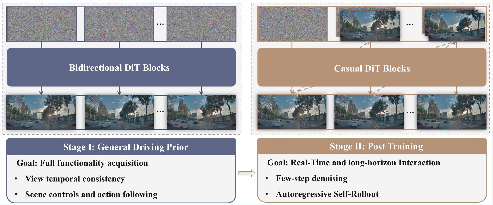
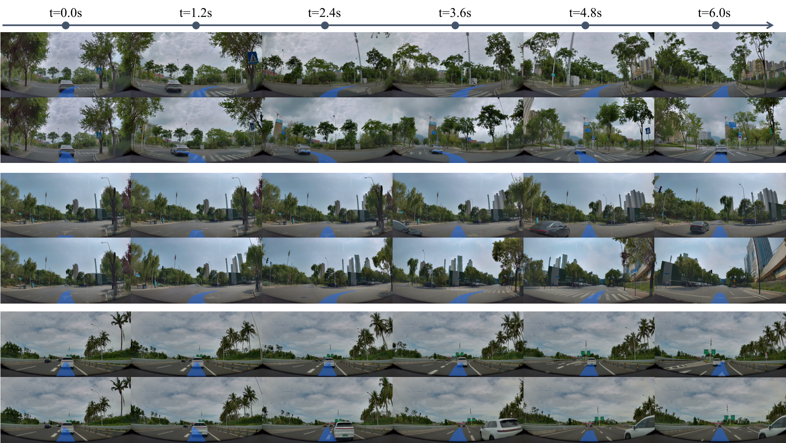
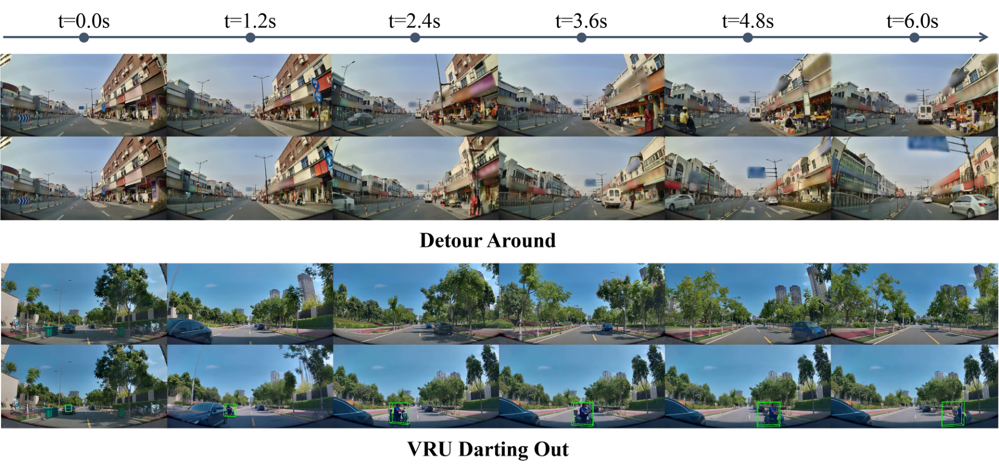

X-World
简单摘要
在端到端自动驾驶时代，可扩展且可靠的评估变得越来越重要，其中视觉-语言-动作（VLA）策略直接将原始传感器流映射到驾驶动作。作者的主线做法是：然而，当前的评估流程仍然严重依赖现实世界的道路测试，这种测试成本高昂，偏向于有限的场景覆盖范围，并且难以重现。
更关键的是，这些挑战激发了现实世界的模拟器，它可以根据提议的行动生成现实的未来观察结果，同时在长期范围内保持可控和稳定。从结果上看，我们提出了一种以动作为条件的多摄像机生成世界模型，可以直接在视频空间中模拟未来的观察。


端到端自动驾驶正在进入一个新阶段，基于学习的系统直接将丰富的传感器流映射到驾驶动作。作者的主线做法是：端到端驱动堆栈（尤其是由视觉-语言-动作（VLA）模型驱动的堆栈）的最新进展表明了在单个可扩展框架内实现统一感知、预测和规划的有希望的路径。
更关键的是，这些模型受益于大规模数据和强大的表征学习，并且它们越来越显示出在复杂的城市交互中的能力。从结果上看，除了评估之外，交互式现实世界模拟器也是 VLA 系统有效在线强化学习 (RL) 的关键推动者。
核心创新
这篇工作的创新不是简单堆模块，而是把问题重新定义为：这些挑战激发了现实世界的模拟器，它可以根据提议的行动生成现实的未来观察结果，同时在长期范围内保持可控和稳定。
第二个关键新意在于：评估和培训的一个关键实际要求是可重复性。这使方法不只是能生成结果，更能解释为什么会有效。
再往后看，为了解决多摄像头自动驾驶场景中几何一致性的关键挑战，我们引入了针对。这也是它和纯工程拼装方案拉开差距的地方。
技术细节
方法主线可以概括为：一个生成世界模型，被制定为动作条件多摄像机视频生成模型。
其中最关键的一环是：和 (iii) 可选场景控制条件，指定环境的可控方面。这样设计直接带来的作用是：我们经常希望模拟器在指定条件下产生相同的未来（或受控的未来系列）。
从训练和推理角度看，作者还特别处理了：为了解决多摄像头自动驾驶场景中几何一致性的关键挑战，我们引入了针对。
$$ \hat{\mathbf{X}}_{t+1:t+H}^{1:V} \sim p\!\left(\mathbf{X}_{t+1:t+H}^{1:V}\mid \mathbf{X}_{t-L:t}^{1:V}, \mathbf{A}_{t:t+H}, \mathbf{C}\right). $$
这组公式用于定义模型中的变量关系和训练目标。建议先看左侧要预测的对象，再看右侧每一项如何约束优化方向。
$$ \mathbf{y}_t = (1-t)\mathbf{y}_0 + t \mathbf{y}_1 . $$
该公式用于定义核心计算关系。阅读时先看左侧目标量，再看右侧由 y、t、y、t 等变量构成的约束和聚合方式。
$$ \mathcal{L}_{\text{RF}}(\theta) = \mathbb{E}_{\mathbf{y}_0,\,\mathbf{y}_1,\,t,\,\mathbf{c}} \left[ \left\| v_\theta(\mathbf{y}_t, t, \mathbf{c}) - (\mathbf{y}_1 - \mathbf{y}_0) \right\|_2^2 \right]. $$
该公式用于定义核心计算关系。阅读时先看左侧目标量，再看右侧由 L、E、y、y 等变量构成的约束和聚合方式。




实验结论
实验主要围绕一个核心问题展开：图中的路标、文字内容和车牌故意模糊，以符合法律和隐私要求。
从主要对比结果看，本节评估其作为可控的以自我为中心的多摄像头世界模型的核心能力。定性结果和消融实验进一步说明：这表明可以同时可靠地执行动态和静态控制，为场景编辑和可重现的基准测试提供可控的模拟器界面。


理解评价
从整篇论文看，它的真正贡献是：这些挑战激发了现实世界的模拟器，它可以根据提议的行动生成现实的未来观察结果，同时在长期范围内保持可控和稳定，而不是单纯把扩散模型继续微调。作者把问题落在“分布外驾驶场景如何稳定生成”这个更关键的缺口上。
它最有说服力的地方在于：我们提出了一种以动作为条件的多摄像机生成世界模型，可以直接在视频空间中模拟未来的观察。这说明论文的方法链路——3D 点云编辑、车辆补全、再到 RL 后训练——是前后闭合的，而不是各模块各自堆叠。
主要局限在于：当前方案仍受算力和时长限制，更适合离线生成而非实时闭环模拟。如果继续往前推进，一个自然方向是把更长时序、更低成本训练和更广泛的 OOD 场景覆盖一起纳入统一评估。
以下相关论文可作为延伸阅读：